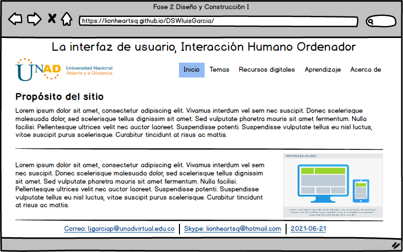

Propósito del sitio
El propósito general de este sitio radica en la presentación del concepto de interfaz de usuario de una manera resumida y desde un punto de vista global,
sin llegar a profundizar demasiado en una teoría que, dada su importancia, tiene un alcance bastante profundo en cuanto a complejidad.
De igual forma, el sitio se presenta como parte del desarrollo de la Unidad 1 - Fase 2 - Diseño y Construcción I - del curso DISEÑO DE SITIOS WEB - (301122A_953)
de la Universidad Nacional Abierta y a Distancia en su carrera Ingeniería de Sistemas.
Como dato adjunto podemos apreciar un mockup que permite ver el diseño en crudo de una interfaz de usuario.
Ver figura 1 ampliada
